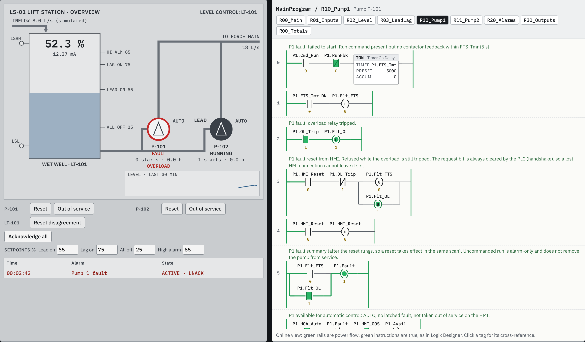

A duplex lift station program in Studio 5000 L5X: rungs, two UDTs, a continuous task and a periodic task. It covers lead/lag with alternation, automatic fail-over, NE 43 transmitter checks with float backup, validated HMI setpoints, a templated alarm handler and HMI handshakes. A scan engine runs the L5X file itself against a simulated wet well. Every number below comes from those runs.

l5x library also reads it: 58 tags, UDT members, timer presets.{[PLC]P1.Fault}, with read/write access and handshake notes..Active, messages, and the acknowledge tag.Measured. The scan engine compiles the L5X's neutral rung text and runs it at 10 ms scans (17 to 50 ms in some tests), plus a 1000 ms periodic task. It runs against a plant model: wet well 4 m² by 3 m, pumps at 18 / 30 L/s, starters with feedback, floats with differential, 4–20 mA transmitter fault modes. Mutation testing applied every valid one-instruction edit and reran the suites.
Not measured. A real controller, I/O and HMI runtime. The L5X has not been opened in Logix Designer (no licence in this environment). The engine covers the instructions this program uses and does not model I/O update timing, task pre-emption or fault routines. Plant figures are illustrative. This is a desk test before FAT, not a replacement for it.